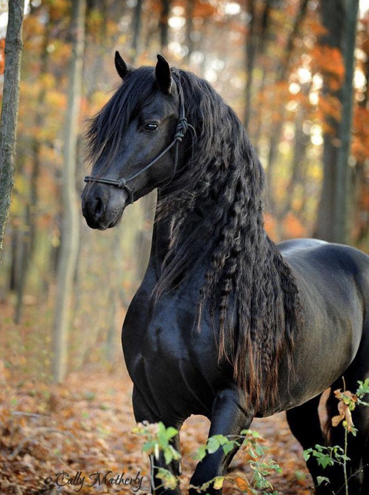
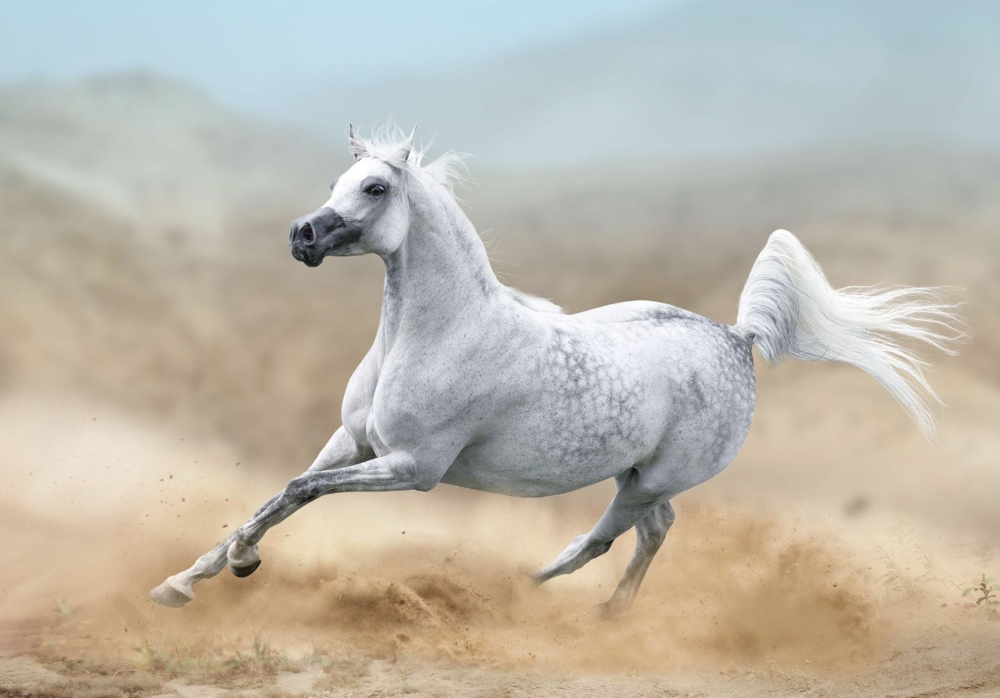
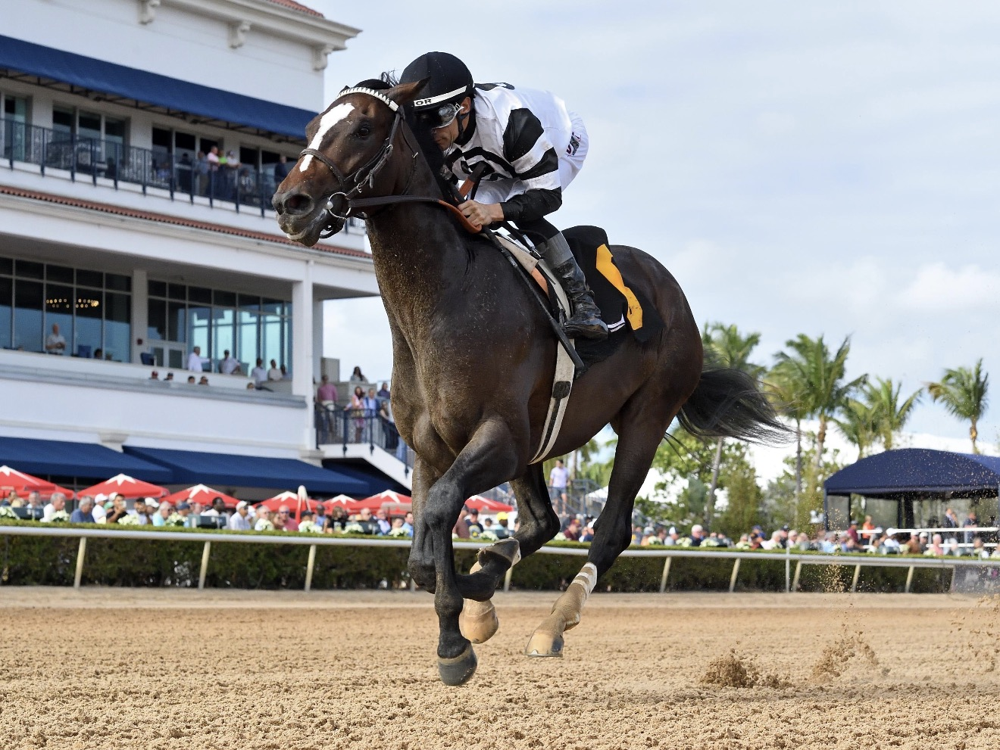
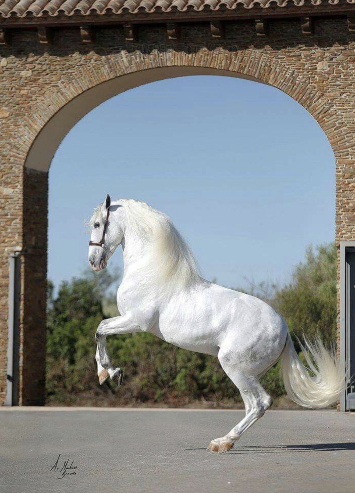
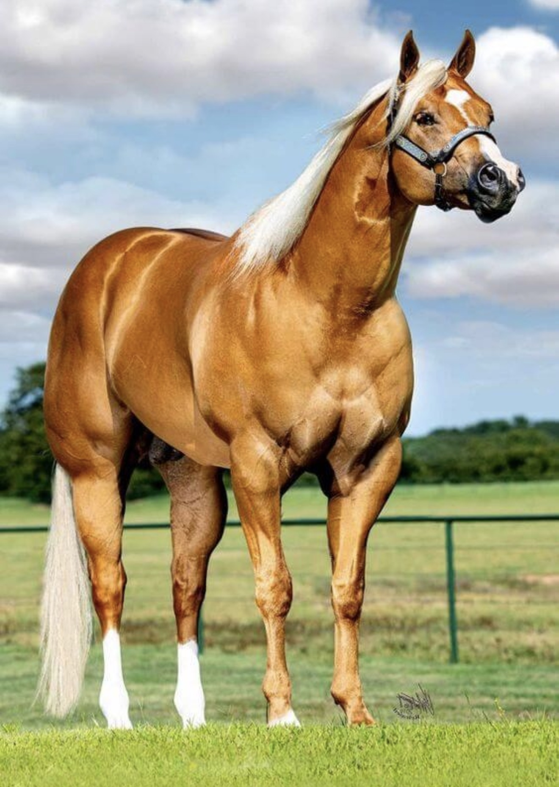
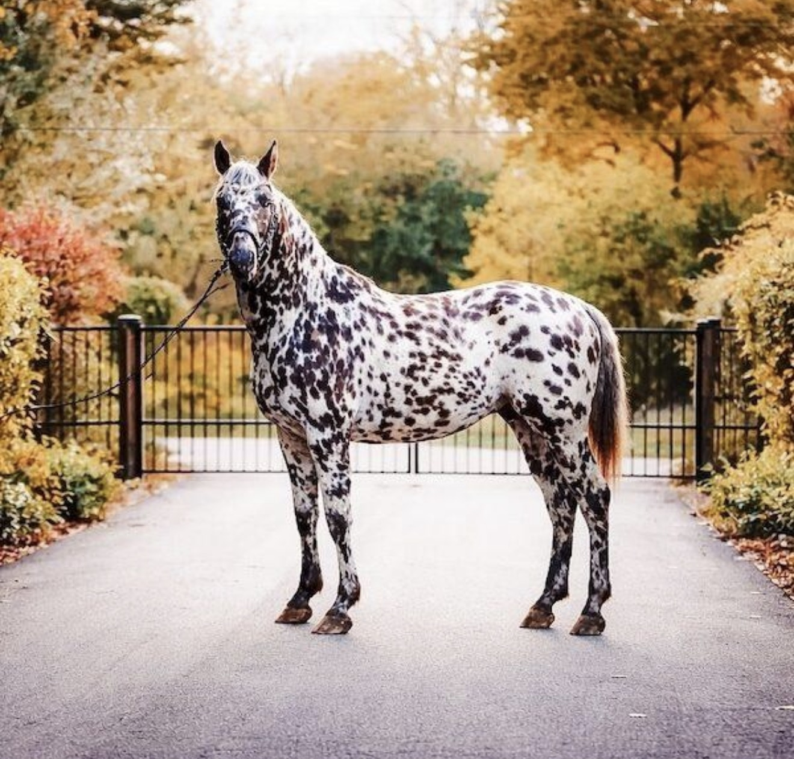
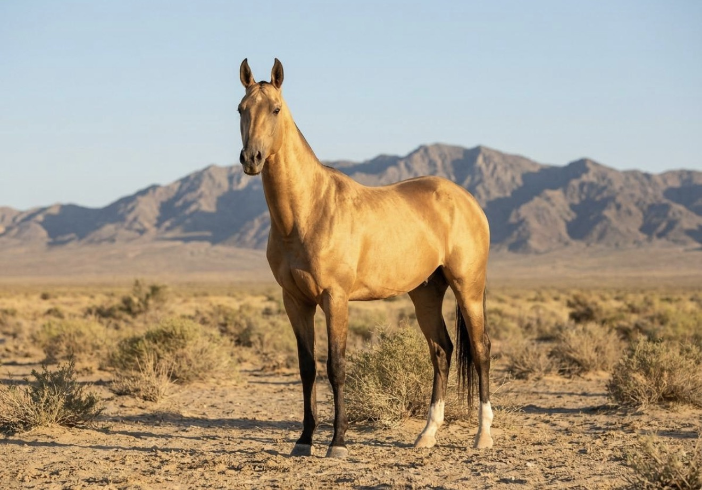

 |
1.Caballo Frison
Originario de los Paises
Bajos.Se caracteriza
por su pelaje negro,su
crin abundante y sus
movimientos
elegantes.Es muy
apreciado en
exhibiciones y doma
| |
 |
2.Caballo Arabe
Una de las razas mas
antiguas.Destaca por
su resistencia,
inteligencia y elegante silueta.Es excelente
para pruebas de resistencia ecuestre.
| |
 |
3.Caballo Pura Sangre Ingles
Es una de las razas mas
destacadas en las carreras de
caballos por su velocidad
agilidad y capacidad atletica
| |
 |
4.Caballo Andaluz
Es conocido por su elegancia,su
fuerza y sus movimientos
armoniosos.Tiene una larga
tradicion en España
| |
 |
5.Cuarto de Milla
Es musculoso,agil y rapido en
distancias cortas.Es muy
popular en el trabajo ganadero
|
 |
6.Caballo Appalosa
Se reconoce por su pelaje con
manchas caracteristicas.Es
versatil y suele destacar por su
resistencia
| |
 |
7.Akhal-Teke
Es una amenaza originaria de
Turkmenistan,famosa por su
pelaje brillante,su silueta
esbelta y su resistencia
| |
|